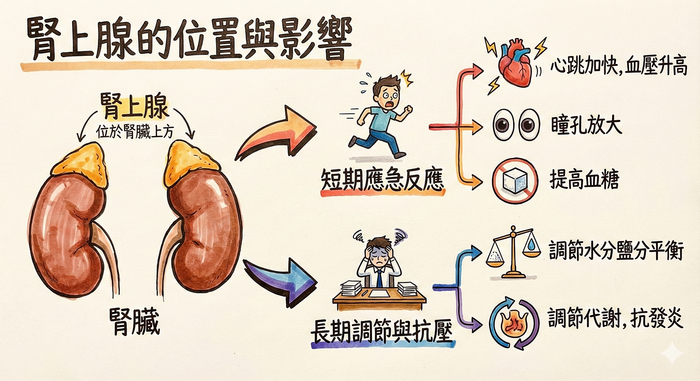

位於 腎臟 上方，可分泌多種 來調節生理反應。例如當人在 時， 腎上腺 會分泌 ，使 、 、 ，以提供細胞較多氧氣與養分；此外， 腎上腺素 也能提高 （血糖即為血液中的 ），以提供細胞應付緊急狀況所需的 。
觀看圖片，協助你在腦中建立「腎上腺」在身體中的位置與功能。

請先觀看兩段影片，再依序完成下面的影片評量練習。
影片中，魯夫被注射的是哪一種激素？
根據影片內容，當腎上腺素大量分泌時，下列哪一項不是常見的生理反應？
在「戰或逃反應」（fight or flight）中，下列哪些變化有助於身體立刻面對危險？（可複選）
提示：想像你要立刻奔跑或防禦，哪些變化會比較有幫助？
小安在荒郊遇到一隻突然衝出的狗，他的身體立刻出現下列哪一組反應，最符合腎上腺素的作用？
下面四題把腎上腺素的知識，連結到真實生活情境中。請依照題意作答，每題作答完才能按「檢查答案」。
小祐準備上台演講時，心跳加速、手心冒汗、呼吸變快。這樣的反應最可能與哪一個腺體與激素有關？
下列哪些情況，短時間內腎上腺素分泌增加，對身體是有幫助的？（可複選）
想想：腎上腺素是「短時間」幫你動員能量，若變成天天如此，身體會怎樣？
請將腎上腺素造成的變化，與它們對身體的主要「目的」配對。
| ① 心跳加速、血壓上升 | → |
| ② 血糖濃度升高 | → |
| ③ 呼吸加快加深 | → |
請判斷下列情境與腎上腺素的關係，並選出較適合的分類。
| ① 期末考當天早上有點緊張，但保持專注應考。 | → |
| ② 幾個月來每天都為成績焦慮到睡不好、心悸。 | → |
| ③ 放假在公園散步、心情放鬆。 | → |